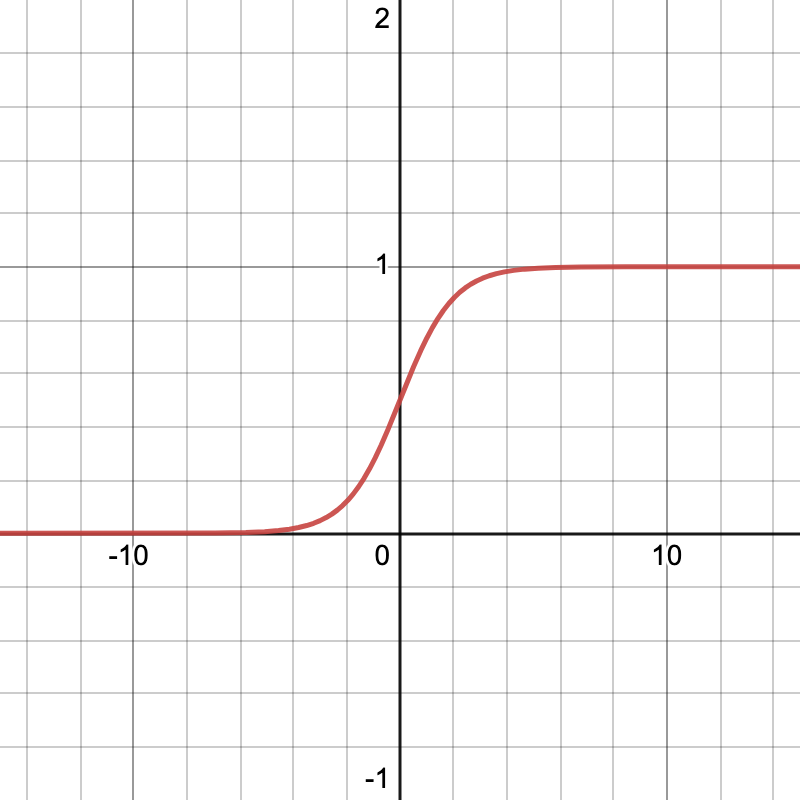

Introduction à l'intelligence artificielle au travers des réseaux de neurones
Définitions et architecture générale d’un modèle d’apprentissage supervisé
Le Larousse définit l’intelligence artificielle comme “l’ensemble de théories et de techniques mises en œuvre en vue de réaliser des machines capables de simuler l'intelligence humaine”. L’IA est ainsi utilisée dans le cadre de problèmes qui ne peuvent être résolus avec un algorithme simple et "déterministe". Cette définition est volontairement vague et englobe un large éventail de techniques diverses parmi lesquelles l'apprentissage automatique (en anglais : machine learning) défini comme un champ d'étude de l'intelligence artificielle qui se fonde sur des approches mathématiques et statistiques pour donner aux ordinateurs la capacité d'« apprendre ».
Deux types d’apprentissages automatiques existent. L'apprentissage non supervisé tout d’abord, qui consiste à laisser la machine apprendre par elle-même. Ce système est notamment utilisé dans le cadre des intelligences artificielles joueuse d’échecs dont on programme les règles et qui apprennent seule à vaincre les plus grands joueurs en s'entraînant contre elles-mêmes, progressant au fur et à mesure des parties. À l'opposé (et c’est ce qui va nous intéresser aujourd’hui) l’apprentissage supervisé consiste à assister la machine lors de son apprentissage en lui fournissant des exemples de ce que l’on souhaiterait qu’elle réalise. L’IA s'entraîne alors sur les exemples qui lui sont fournis et tente par elle-même de comprendre comment réaliser le processus qui mène de l’entrée à la sortie.
L’objectif du jour sera le suivant : construire une intelligence artificielle pour détecter si une image correspond à la photo d’un chat ou d’un chien. Nous disposons pour cela d’un "dataset", c'est-à-dire d'une large base de données d’exemples, sur laquelle l’IA va pouvoir s'entraîner. Nous étudierons aujourd’hui un modèle bien particulier d’IA à apprentissage supervisé : les réseaux de neurones artificiels, modèle le plus répandu aujourd’hui dans le monde de l’IA.
Tout d’abord, avant de présenter les réseaux de neurones artificiels, présentons l’architecture générale d’un modèle d’apprentissage supervisé.
Nous cherchons donc à construire une machine qui, prenant une image en entrée, indique s'il s’agit d’un chat ou d’un chien. Il s’agit d’un problème de classification puisque la réponse attendue est la catégorie de l’image (chat / chien). Il s'agit par ailleurs d'un problème de classification binaire puisque ces catégories sont au nombre de deux.
La première étape est de transformer les données de manière à les rendre intelligibles par la machine. Nous travaillons dans notre cas avec des images, dont on peut extraire une à une la couleur des pixels de manière à obtenir une liste de réels $x_1, x_2, ..., x_n$ qui représenteront, mis bout à bout, l’image dans sa totalité. Dans la suite de l'exposé, nous utiliserons la notation $X$ pour faire référence à $x_1, ..., x_n$.
La prévision de notre IA lorsqu'une image lui est fournie est alors représentée par une fonction $a(X, W)$ qui dépend non seulement des données en entrée mais également de $n$ paramètres (un associé à chaque variable d’entrée) appelés poids (weight) $w_1, w_2, ..., w_n$ correspondant là aussi à des nombres réels. Ces poids peuvent être vus comme les curseurs qui influencent la sortie du modèle. L’enjeu sera alors de trouver les bons poids de manière à avoir la prévision la plus juste possible. À noter que nous utiliserons la lettre $W$ pour faire référence à ces poids $w_1, ..., w_n$. La fonction $a$ doit retourner un pourcentage correspondant à la probabilité selon le modèle que l'image appartienne à une classe ou à une autre (100% si il s’agit selon elle d’un chien, 70% si il s’agit selon elle probablement d’un chien, 0% si il s’agit selon d’un chat). À préciser ici que n’ayant aucune information a priori sur le problème, les poids sont généralement initialisés aléatoirement.
Pour évaluer la justesse de la prédiction nous disposerons d’une fonction dite fonction coût $L(a, Y)$ qui dépend non seulement de la prédiction $a$ du modèle mais aussi de la réponse $Y$ que l'on aurait souhaité obtenir (d’où l’intérêt de s'entraîner sur des exemples "étiquetés", i.e où chaque image est associée à sa catégorie). Cette fonction prendra une valeur d’autant plus grande que l’erreur est importante. Si le modèle prédis un chien à 100% sachant qu’il s’agit d’un chat, l’erreur est importante. A contrario, si le modèle prédis qu’il s’agit d’un chien et que cela est confirmé par les données du dataset, l’erreur sera faible. Tout l'enjeu sera alors de trouver les poids $W$ de manière à minimiser la fonction coût. Il s’agit donc d’un problème d’optimisation.
Ce processus de minimisation de $L$ est réalisé par un algorithme d’optimisation qui se base sur les données fournies par la fonction coût pour adapter correctement les poids. Le plus populaire d’entre eux est l’algorithme de descente de gradient que nous allons présenter par la suite.
Ce processus de (1) prévision, (2) évaluation et (3) optimisation doit être répété un certain nombre de fois, il constitue la phase d'entraînement du modèle. Une fois entraîné, nous pourrons donner à notre modèle de nouvelles images qu’il sera alors capable d’analyser. Il procèdera alors à une généralisation de ses données d'entrainement.
Le modèle du neurone artificiel
Les modèles d’apprentissage supervisé varient les uns par rapport aux autres aux niveaux du modèle, de la fonction coût et de leur algorithme de d’optimisation. Nous analysons ici le modèle du neurone artificiel, que nous étendrons par la suite au réseau de neurones artificiel.
Au même titre que tous les modèles d’apprentissage supervisé, le neurone prend en entrée un nombre $n$ de variables réelles $x_1, x_2, ..., x_n$ représentant la donnée fournie.
La prédiction du neurone se fait alors en deux phases.
La première consiste à opérer une simple combinaison linéaire entre les variables $x_1, ..., x_n$ et les poids $w_1, ..., w_n$ de notre neurone. Cette opération est symbolisée par la fonction de combinaison z suivante :
$$z(X, W) = w_1 x_1 + w_2 x_2 + ... + w_n x_n = \sum_{k=1}^{n} w_k x_k$$
Nous ajoutons en pratique un paramètre supplémentaire $b$ de manière à améliorer les résultats du neurone.
$$z(X, W, b) = w_1 x_1 + w_2 x_2 + ... + w_n x_n + b = b + \sum_{k=1}^{n} w_k x_k$$
Cette fonction fournit alors une valeur d’autant plus grande que le modèle considère que l’image correspond à un chien et d'autant plus faible qu'il considère qu'il s'agit d'un chat. Nous cherchons toutefois à obtenir une probabilité, ce qui nécessite de composer notre fonction de combinaison avec la fonction d'activation suivante :
$$\sigma(z) = \frac{1}{1+e^{-z}}$$
Représentée par le graphe suivant

Cette fonction, dite sigmoïde, présente bien les propriétés recherchées : - Elle tend vers 0 en - (probabilité de 0 pour une valeur très faible) - Elle tend vers 1 en + (probabilité de 1 pour une valeur très élevée) - Elle est à valeur dans $]0, 1[$ (founit un pourcentage quelque soit z) - Elle est définie sur R tout entier - Elle est strictement croissante sur R tout entier (pourcentage proportionnel à la valeur obtenue par la fonction combinaison).
Nous obtenons donc bien un pourcentage, d’autant plus grand que la sortie du neurone est grande, i.e d'autant plus proche de 100% que le neurone considère qu'il s'agit d'un chien.
Ainsi, partant de données $X$ associées aux paramètres $(W, b)$ le neurone fournit la sortie suivante (notée $\sigma$) :
$$\sigma = \sigma \circ z(X, W, b) = \frac{1}{1+e^{-(w_1 x_1 + ... + w_n x_n + b)}}$$
Notre modèle est donc désormais capable de réaliser des prédictions dont nous allons évaluer la pertinence à l'aide de la fonction coût.
Nous disposons pour rappel d’un dataset de $m$ lignes, associant chacune les données de la ième image $X_{(i)}$ à la sortie souhaitée $y_{(i)}$ (1 pour chien, 0 pour chat). La fonction coût a alors pour rôle d’évaluer la moyenne des écarts, pour chacune des images présentes dans notre dataset, entre $y_{(i)}$ (la sortie que l'on aurait souhaité obtenir) et la sortie $\sigma_{(i)}$ effectivement prédite par le modèle pour cette image. Nous utilisons pour cela la fonction dite Log Loss qui s’exprime de la façon suivante :
$$L = - \frac{1}{m} \sum_{i=1}^{m} y_{i} \log(\sigma_i) + (1-y_{i})\log(1-\sigma_{i}) $$
Le coût $L$ correspond alors à la moyenne des écarts entre la sortie souhaitée et la sortie effectivement obtenue, valeur que l'on évalue dans ce cas à :
$$y_{i} \log(\sigma_i) + (1-y_{i})\log(1-\sigma_{i})$$
L’utilisation des logarithmes est ici dûe à une contrainte technique qui apparaît dans l’implémentation informatique de l’algorithme. (voir l'annexe pour en savoir plus)
"Il est clair que" la fonction présente les propriétés souhaitées, c'est-à-dire de fournir une valeur d’autant plus grande que l’écart est important et respectivement d’autant plus faible que l’écart est petit.
Nous disposons à ce moment de l'exposé d’une fonction de prédiction et d’une fonction d’évaluation. Il est maintenant temps de mettre en place une procédure pour adapter les poids $W$ de manière à minimiser le coût $L$. C’est la phase d’optimisation.
Nous utiliserons pour cela l’algorithme de descente de gradient.
Revenons pour illustrer son fonctionnement à un modèle plus simple. Supposons que nous n’ayons en entrée de notre neurone qu’une seule variable $x$ associée à son unique paramètre $w$. Nous pouvons alors tracer un graphe représentant le coût $L$ en fonction du paramètre $w$.

Nous cherchons ici à trouver le paramètre $w_{min}$ qui minimise l’erreur, i.e l'absisse du minimum de $L(w)$. N’oublions pas que nous ne disposons au départ d'aucune information sur le problème, si bien que le paramètre $w$ est initialisé aléatoirement. L’algorithme de descente de gradient consiste alors à utiliser la dérivée de $L$ en $w$ pour converger progressivement vers le minimum de la fonction. En effet, si la dérivée en $w$ est négative, alors la pente de la tangente à $L$ en $w$ est négative et le $w_{min}$ se trouve à droite de $w$ ($w_{min} > w$). A contrario, si la dérivée en $w$ est positive alors la pente de la tangente à $L$ en $w$ est positive et le $w_{min}$ se trouve alors à gauche de $w$ ($w_{min} < w$). En se basant sur la dérivée de $L$ en $w$, nous pouvons donc adapter $w$ de manière à le rapprocher de $w_{min}$. En répétant l’opération un certain nombre de fois, $L$ va progressivement diminuer, découvrant ainsi le paramètre $w_{min}$ (ou du moins une valeur approchée) qui minimise la fonction coût.
Cette idée peut être formalisée comme suit :
$$w_{t+1} = w_{t} - \frac{\partial L}{\partial w}$$
qu’il faut lire de la façon suivante : "Le poids à l’étape suivante est le poids à l’étape précédente auquel on soustrait la dérivée de $L$ en $w$".
En pratique nous ajoutons un paramètre réel appelé learning rate (taux d’apprentissage) et noté $\alpha$ pour contrôler la vitesse de convergence du paramètre $w$. Nous n’allons pas ici détailler davantage l’utilité du learning rate, bien que celui-ci soit central en pratique dans l'efficacité de l'entrainement de notre modèle. Dans la plupart des implémentations, $\alpha$ sera compris entre 0,01 et 0,1.
Ainsi, l’équation précédente devient :
$$w_{t+1} = w_{t} - \alpha \times \frac{\partial L}{\partial w}$$
Notre modèle est enfin terminé. Nous disposons bien d'une fonction de prédiction, d’une fonction coût et d’un algorithme d’optimisation. En répétant la boucle (1) prédiction, (2) évaluation, (3) optimisation suffisamment de fois et sur suffisamment de données, notre modèle est désormais en capacité d'apprendre et de généraliser par la suite ses apprentissages.
Malgré tout, le modèle consistant en un neurone unique apparaît rapidement trop "limité". La simplicité du modèle ne lui permet pas d’établir des relations complexes entre des ensembles distincts de données, si bien qu’en pratique il ne peut être utilisé que pour un nombre restreint de problèmes "simples". Nous devons donc complexifier notre modèle pour augmenter ses possibilités d’actions.
Le modèle du réseau de neurones artificiels
Nous allons pour cela associer plusieurs neurones en un réseau, d'une façon similaire aux neurones biologiques.
Pour comprendre le fonctionnement d’un réseau de neurones, nous allons tout d’abord étudier un cas simple, celui d’un réseau à deux couches, l'une composée de deux neurones et l'autre d'un unique neurone (réseau $2 \times 1$).
L’évaluation d’un entrée $X$ s’effectue selon un processus dit de forward propagation (propagation en avant). Les informations sont évaluées couches après couches, chacune d’entre elles utilisant les sorties de la précédente comme entrée.
Les données $X$ sont donc tout d’abord envoyées dans chacun des neurones de la première couche, possédant tous leurs propres paramètres. Ainsi, si nous disposons dans notre première couche de deux neurones 1 et 2, leurs sorties respectives seront, d’après ce qui a été dit précédemment :
$$\sigma^{(1)} = \sigma \circ z^{(1)}(X, W^{(1)}, b^{(1)}) = \sigma \left( w_{1}^{(1)}x_1 + w_{2}^{(1)} x_2 + ... + w_{n}^{(1)} x_n + b^{(1)} \right) $$
$$\sigma^{(2)} = \sigma \circ z^{(2)}(X, W^{(2)}, b^{(2)}) = \sigma \left( w_{1}^{(2)}x_1 + w_{2}^{(2)} x_2 + ... + w_{n}^{(2)} x_n + b^{(2)} \right) $$
où $w_{i}^{(j)}$ désigne le poids associé à la i-ème entrée du j-ème neurone.
Introduisons, avant de continuer une notation dont nous aurons besoin par la suite. Travaillant sur plusieurs couches, il est nécessaire, dans nos équations, de préciser à quelles couches sont associés les différents termes qui interviennent. Nous utiliserons donc la notation suivante $d^{[c]}$ pour désigner la donnée $d$ associée à la c-ème couche. Nous pouvons ainsi réécrire les équations précédentes (associées à la première couche) de la façon suivante :
$$\sigma^{(1)[1]} = \sigma \circ z^{(1)[1]}(X, W^{(1)[1]}, b^{(1)[1]}) = \sigma \left( w_{1}^{(1)[1]}x_1 + w_{2}^{(1)[1]} x_2 + ... + w_{n}^{(1)[1]} x_n + b^{(1)[1]} \right) $$
$$\sigma^{(2)[1]} = \sigma \circ z^{(2)[1]}(X, W^{(2)[1]}, b^{(2)[1]}) = \sigma \left( w_{1}^{(2)[1]}x_1 + w_{2}^{(2)[1]} x_2 + ... + w_{n}^{(2)[1]} x_n + b^{(2)[1]} \right) $$
Continuons sur notre lancée en analysant la deuxième couche de notre réseau de neurones $2 \times 1$. Comme indiqué précédemment, le neurone de la deuxième couche ne se base désormais plus sur les données fournies à l’entrée du réseau mais sur les sorties $\sigma^{(1)[1]}$ et $\sigma^{(2)[1]}$ des neurones de la première couche. Sa sortie correspond donc à
$$\sigma^{(1)[2]} = \sigma \circ z^{(1)[2]} (\sigma^{(1)[1]}, \sigma^{(2)[1]}, W^{(1)[2]}, b^{(1)[2]}) = \sigma \left( w_1^{(1)[2]} \sigma^{(1)[1]} + w_2^{(1)[2]} \sigma^{(2)[1]} + b^{(1)[2]} \right)$$
À noter ici que le neurone de la deuxième couche possède autant de paramètre qu'il y a de neurones dans la première couche.
Cette valeur, obtenue à l'issue d'une forward propagation au travers des différentes couches du réseau, correspond à la prédiction du réseau.
Ces équations peuvent facilement se généraliser à n'importe quel réseau de neurones de la façon suivante :
- Pour le i-ème neurone de la première couche :
$$\sigma^{(i)[1]} = \sigma \circ z^{(i)[1]}(X, W^{(i)[1]}, b^{(i)[1]}) = \sigma \left( w_{1}^{(i)[1]}x_1 + w_{2}^{(i)[1]} x_2 + ... + w_{n}^{(i)[1]} x_n + b^{(i)[1]} \right) = \sigma \left( b^{(i)[1]}+ \sum_{k=1}^{n} w_{k}^{(i)[1]} x_{k} \right)$$
- Pour le i-ème neurone de la C-ième couche composée de $p$ neurones ($C > 1$) :
$$\sigma^{(i)[C]} = \sigma \circ z^{(i)[C]}(S^{[C-1]}, W^{(i)[C]}, b^{(i)[C]}) = \sigma \left( w_1^{(i)[C]} \sigma^{(1)[C-1]} + ... + w_p^{(i)[C]} \sigma^{(p)[C-1]} + b^{(i)[C]} \right) = \sigma \left( b^{(i)[C]}+ \sum_{k=1}^{p} w_{k}^{(i)[C]} \sigma^{(k)[C]} \right)$$
où $S^{[C-1]}$ correspond à l'ensemble des $\sigma^{(i)[C-1]}$, i.e à l'ensemble des sorties des neurones de la couche précédente.
La sortie du réseau étant un nombre réel, la fonction Log Loss est toujours adaptée pour évaluer la pertinence des prédictions du modèle.
Nous devons enfin adapter l'algorithme de descente de gradient au cas du réseau de neurones. Il suffit pour cela de dériver $L$ de façon spécifique par rapport à chacun des paramètres du réseau. Ainsi, le i-ème poids du j-ème neurone de la c-ième couche à l'étape suivante peut être exprimé de la façon suivante :
$$w_{i}^{(j)[C]}(t+1) = w_{i}^{(j)[C]} - \alpha \times \frac{\partial L}{\partial w_{i}^{(j)[C]}}$$
Nous disposons désormais d'une fonction de prédiction, d'évaluation et d'un algorithme d'optimisation. Le modèle de réseau de neurone est donc terminé.
Pour illustrer, nous avons implémenté l'algorithme en Python dans le cadre du problème de la distinction chat / chien sur une image. Les graphiques ci-dessous représentent l'évolution des performances du modèle en fonction du nombre de répétition de la boucle prévision, évaluation, optimisation. Le graphique (1) représente la fonction Log Loss en fonction du nombre d'itération (elle diminue au fur et à mesure des itérations, i.e l'erreur diminue au fur et à mesure de l'entrainement). Le graphique (2) représente quant-à lui la précision du modèle, évaluée comme la proportion de "bonnes" prédictions sur l'ensemble du dataset (elle augmente augmente au fur et à mesure de l'entrainement).

Annexe
Voici quelques ressources pour approfondir le sujet.
Chacune d’entre elle est précédée d’un certain nombre d’étoiles suivant sa complexité, allant d’une étoile (*) pour les plus faciles à trois étoiles (***) pour les plus complexes.
-
(*) Une vidéo sur la manière dont les IA peuvent comprendre le langage ScienceEtonnante — Comment les I.A. font-elles pour comprendre notre langue ?
-
(*) Une vidéo pour comprendre le fonctionnement des IA génératrices d'images ScienceEtonnante — Comment ces IA inventent-elles des images ?
- (*) Une vidéo pour comprendre le fonctionnement de ChatGPT ScienceEtonnante — Ce qui se cache derrière le fonctionnement de ChatGPT
-
(**) Une excellente série de vidéos sur le fonctionnement et les enjeux présent et futur de l'intelligence artificielle Science4All — L'intelligence artificielle et le machine learning
-
(***) Une excellente formation (sur laquelle ce cours est en grande partie basé) sur le fonctionnement des réseaux de neurones artificiels et leur implémentation en Python. MachineLearnia — Formation Deep Learning